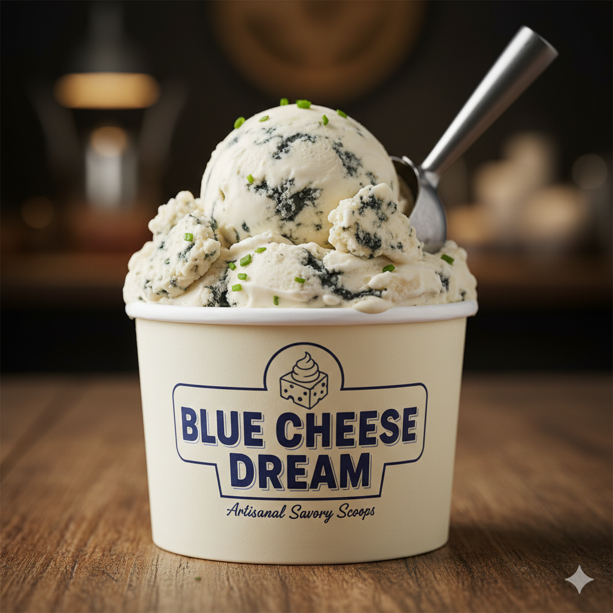
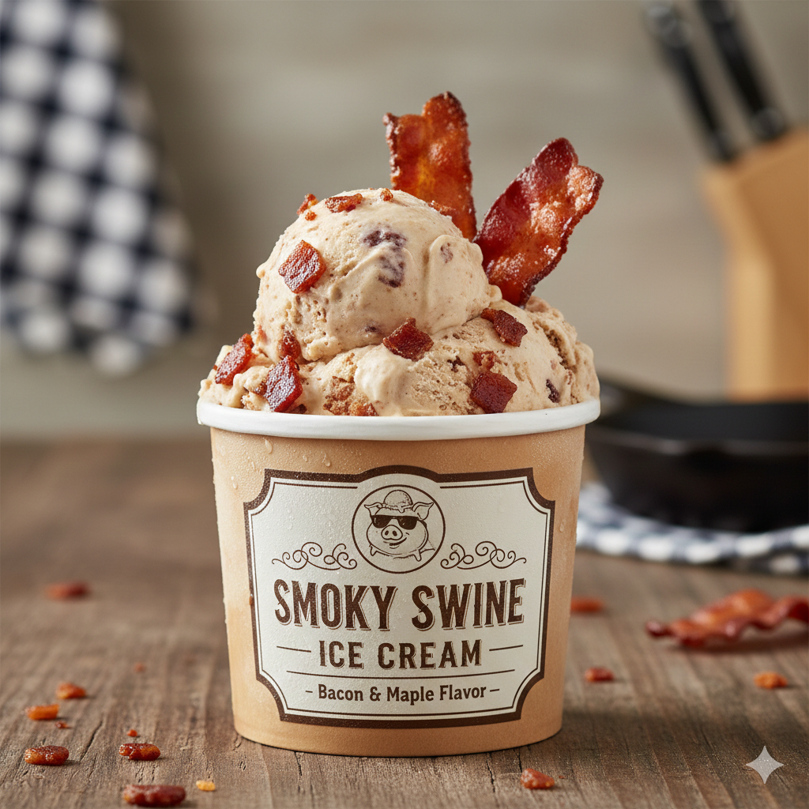
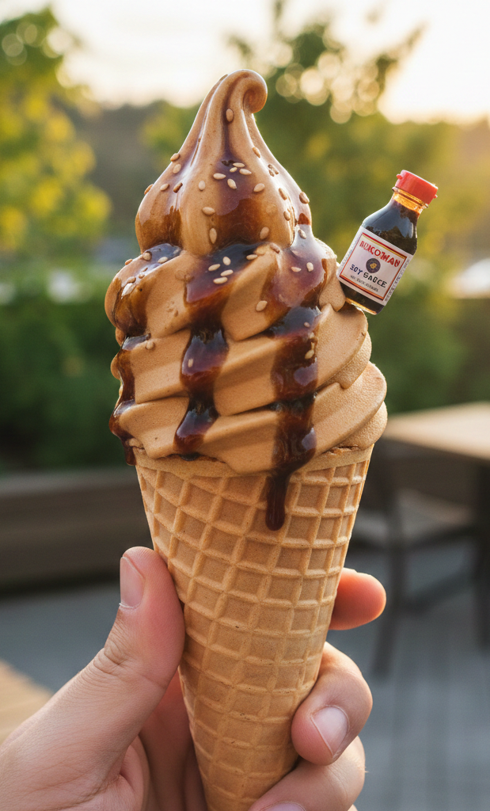

The World’s Wildest Ice Cream.
Forget vanilla. At Flavor Quest, we’ve turned the "Every Flavor" gamble into a premium ice cream experience. We craft frozen dares for the bold, using high-quality dairy to churn the most eccentric flavors on the planet.
Why settle for a boring scoop when you can dive into Roasted Garlic, Pickle Juice, or Smoked Habanero? Our ice cream shop specializes in the "un-scoopable"—flavors that sound like a mistake but taste like a revelation. Whether you’re a culinary explorer or just looking to prank your palate, we ship our bizarre pints straight to your door.

Flavor Quest didn’t start in a boardroom; it started in a home kitchen with a single dare. Our founder, James Dol, was babysitting his niece while her parents were off celebrating their anniversary. The young girl was obsessed with pickles and demanded them on almost anything. To make her smile, he spent a weekend figuring out how to balance the tang of vinegar with the richness of heavy cream.
Unfortunately, the girl did not like her savory dessert. But, this gave James the idea to try other ice cream combinations and petition his family to try them. He went from garlic to ketchup to jalapeño, each combination being more wild than the next.
Eventually his neighbors heard of his concoctions and actually started paying for his desserts. To them, it became a sort of game. They’d commission him for parties, and his desserts became a challenge to those who attended. In other words, a dare.
Now, Flavor Quest has 5 store locations and a website. It is bigger than it has ever been before and it’s all thanks to the community who support it. If you’d like to commission your own flavor, you can click the “Custom Flavor” tab, or if you just want to buy from our set list of flavors you can go straight to the “Order Now” tab to make your order.
Photo Gallery.





